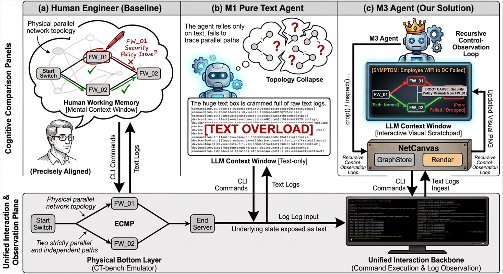
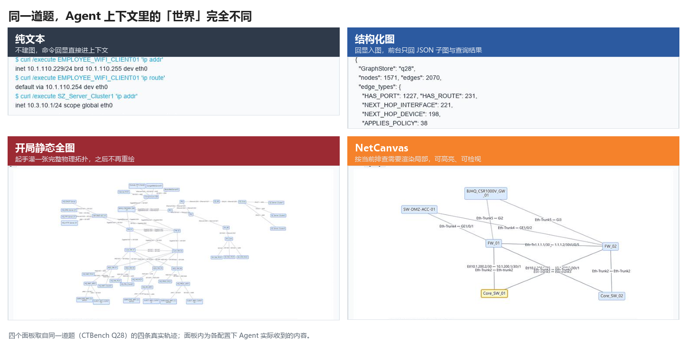
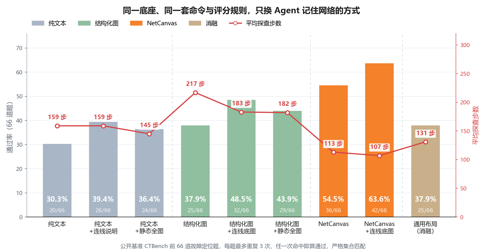

跨设备 IP 故障定位里，Agent 要在多台设备、多条路径上把「谁连谁、流量在哪分、这一跳是哪台防火墙」维持住。常见做法是把 CLI 回显堆进文本上下文：邻接、分叉、区域层次都散在各轮日志里，模型只能一遍遍重拼。华为 GTS 把这个失效叫拓扑失忆。
NetCanvas 的做法不是再往窗口里堆文本，而是把工作记忆做成一张跟着探查更新的交互拓扑图。后台维护图状态，前台按当前任务渲染局部视图；Agent 用语义指令取景、追路径、检视属性。CTBench 前 66 道故障定位题上，同一底座、同一套评分，只换工作记忆的组织方式：纯文本通过率 30.3%，NetCanvas 54.5%，平均步数从 159 降到 113。对照下来，起作用的是「能跟着探查改的交互视图」和「按园区 / 核心 / 安全域摆的布局」，不是上下文里多贴了一张图。
01 / 拓扑失忆：回显读得懂，路径关系保不住
跨设备排障不是单点读日志。一条路径会穿过交换机、路由器、防火墙，证据每次只露出局部：接口、邻居、路由、策略、配置片段。模型和网工一样，得把这些碎片拼成一张还能用来定位的局部拓扑。
纯文本 Agent 把命令输出、推理过程和中间结论全部写进上下文。空间关系因此变成零散文本事实。探查跳数一多，先前推过的上游连接容易在读下游回显时丢掉，下一步又得重推谁连谁。这就是拓扑失忆。把回显抽成 JSON 图，后台有结构了，模型眼前仍是符号，空间关系还得自己恢复，Token 往往更高。
有一道双防火墙题把这个缺口摊开。办公 PC 访问外网不通，网里一对热备防火墙，标准根因是其中一台没启用全局热备协议（HRP）。纯文本 Agent 打了 151 次工具调用，全是下发 CLI，两台防火墙的热备状态都查过了。最后却把根因判给另一台的安全策略，还加上一台出口网关的 NAT：两条都错，而且认错了这条路径上的那一台。会发命令、读得懂回显，不知道两台并行防火墙各自站在第几跳。

所以缺的不是「再读一轮日志」，而是进模型窗口的那份世界怎么组织。后台可以随探查维护一张越来越大的图 Gt；整张 Gt 或原始日志塞不进有限窗口。真正进模型的是按当前任务切出来的工作记忆 Wt。01 只把缺口钉在这里：Wt 给文本、给 JSON，还是给一张能跟着探查改的图，结果会差很多。怎么给、给完能不能按需换局部，放到下一节。
02 / 方法：探查、入图、渲染、决策
NetCanvas 的答法是：Wt 用跟着探查更新的交互拓扑图。模型负责决策，系统把当前相关的那一段网画出来、允许点选。网工排障本来就靠拓扑图做路径追踪、局部放大、确认设备位置；这里把同一件事做成运行时。

谁在干活，分四层。模型侧窗口里只有当前拓扑图和 Manifest（每个实体的标识、画在哪、哪块能点）；动作层把请求分成看图、查属性、发命令；后台引擎校验调用、更新 GraphStore、按 Manifest 定位并重绘；执行环境在设备或仿真里跑 CLI，返回原始文本回显。上下文里只有图和这份句柄，没有整库。

一轮排障怎么走，是下面四步（论文里写作 Probe → Ingest → Render → Act）。
- 探查。Agent 指定设备、下发 CLI，例如读路由表、接口状态或配置片段。环境返回原始文本。
- 入图。抽取模型把回显解析成路由条目、接口、OSPF 邻居、下一跳等对象，合并进 GraphStore，Gt 变大一圈。抽取失败或命令不在白名单时，这一轮退回原始回显，不中断后面的步骤。
- 渲染。按园区 / 广域、核心 / 接入、安全域这些工程坐标，从 Gt 切出目标子图，画成一张图，并生成 Manifest。之后 Agent 用设备、链路、路径这些语义标识发请求，后台按索引定位、裁剪、重绘。
- 决策。Agent 看着当前这帧图，选择下一步：继续发命令，或先在图上换取景、追路径、打开属性。图不是环境拍来的照片，是 GraphStore 按当前任务渲出来的领域视图；Agent 发语义指令，后台重画。
这四步落成 Agent 能调的接口如下（名称是实验代码里的接口名）：
| 工具 | 它要做什么 | 系统返回什么 |
|---|---|---|
flush_and_render |
发一条命令，并把这轮新证据立刻画出来 | 入图后的拓扑图 + Manifest |
render_topology |
换取景：全局 / 设备邻域 / 端到端路径，或切换物理 / 逻辑 / 控制 / Overlay / 安全平面 | 从已有 GraphStore 重画，不再跑 CLI |
crop_node |
看某个节点的三跳邻域和属性 | 局部图 + 属性框 |
trace_route_path |
按路由和下一跳追三层转发路径 | 路径高亮，并标明这条跳链是否闭合 |
trace_l2_paths |
按端口、LLDP、对端链路追二层 / 物理连通 | 物理平面高亮 |
inspect_visual_node / inspect_visual_edge |
问某个节点或某条链路在图库里的证据 | 命中对象高亮 + 属性框叠回图上 |
draw_agent_path |
把自己的判断写回图上 | 按它给的跳序和每跳通断，画成绿 / 红虚线 |
闭环里有三个设计决定。04 节会分开验：边查边长对上「开局一张静态图够不够」，当前视图对上「一次把全图摊开行不行」，领域布局对上「换成力导向还剩多少」。
图跟着探查长。现场一开始没有完整全局拓扑。每入一次图，新设备、新链路、新的路径证据合并进 Gt。Agent 认的是一张边查边长的图，不是开局贴死的快照。
01 节那道双防火墙题，换成 NetCanvas 之后可以按帧看到图是怎么长出来的：探到核心，两侧防火墙先出现；焦点移到防火墙，路径开始成形；出口网关齐了，整条路径才落在同一视图上。两台防火墙的并行关系一旦在图上摆开，问题就从「哪台防火墙有毛病」变成「这条路径上这台该起什么作用」。这一次 49 次工具调用，其中发命令只有 5 次，根因一次命中。对面纯文本是 151 次调用，全部在发命令。

每步只给当前视图。完整 Gt 不进窗口。渲染切出来的始终是当前任务相关的局部：全局和局部切换、按焦点裁剪、高亮路径、打开节点和边的属性。空间状态放在 GraphStore 里，模型不用在长文本里重拼整张网。开局给一张不能变焦的静态全图，验的就是这件事的反面。
按网工习惯摆。设备按园区 / 广域、核心 / 接入、安全域归组。布局编码的是工程语义，不是为了好看。入图和交互协议都不动、只把这些坐标换成 NetworkX 力导向布局（Fruchterman–Reingold），看布局本身占多少分。
三个决定要分开看，就不能连底座、评分、数据源一起改。下一节只换 Wt 怎么组织。
03 / 实验：只换工作记忆怎么组织
评测用公开基准 CTBench 的前 66 道故障定位题（Q1–Q66）。题目来自真实运维案例，经专家流程整理。Agent 进入未知网络、自己发命令，从不完整证据里给出规范化根因（故障节点、故障对象、根因），覆盖路由、端口、安全 / NAT、Overlay/VPN、高可用。证据是局部的，拓扑是未知的，根因往往在跨设备的那一跳上。
底座、harness、评分规则、底层 CLI 数据源固定，变的只是上下文里那份世界怎么组织。九条配置分成三族，外加一条只换布局的消融：
- 纯文本（M1 / M1-0 / M1-0-0）。回显直接进上下文。M1 只堆探查文本；M1-0 额外预置一段物理连线说明；M1-0-0 开局给一张静态物理拓扑图，之后不再更新、不能交互。
- 结构化图（M2 / M2-0 / M2-0-0）。同样入图，前台只给 JSON 子图和图查询结果，没有图像。M2-0 开局把物理连线写入 GraphStore；M2-0-0 再加一张静态物理图。
- NetCanvas（M3 / M3-0）。走完探查 → 入图 → 渲染 → 决策。M3-0 用同一份物理连线做底图，后续探查继续画在上面。
- 只换布局（M3g）。和 M3 同一套管线，只把渲染坐标换成通用力导向。
预置只给物理平面：设备和物理连线。不含逻辑平面、路由表、ACL、接口状态、端口配置、协议状态，也不含故障答案。逻辑状态还是要靠 CLI 查。
主指标是 66 题上的 best-of-3 通过率：每个（题目, 配置）最多独立跑 3 次，任一次命中算这题通过。判分是严格集合匹配，不对语义放水、不给部分分。步数 = 一次工具调用，发一条 CLI 和在图上换一次取景都算一步；平均数含成功和失败。Token 只看成本趋势，不当作「第一次答对花了多少」。底座统一 MiniMax-M3，每题最多 1 小时。
同一道题上，这几类配置给 Agent 看的东西不一样。数字放在下一节，先看它实际收到的是什么。
04 / 结果：赢的不是「有图」

九条配置的数字如下（步数为平均每次运行的工具调用次数，成功失败都计入）。
| 工作记忆配置 | 答对 | 通过率 | 平均步数 |
|---|---|---|---|
| 纯文本 | 20/66 | 30.3% | 159 |
| 纯文本 + 开局静态图 | 24/66 | 36.4% | 145 |
| 纯文本 + 预置连线数据 | 26/66 | 39.4% | 159 |
| JSON 结构化图 | 25/66 | 37.9% | 217 |
| 结构化图 + 开局静态图 | 29/66 | 43.9% | 182 |
| 结构化图 + 预置连线数据 | 32/66 | 48.5% | 183 |
| NetCanvas（领域布局） | 36/66 | 54.5% | 113 |
| NetCanvas，换通用力导向布局 | 25/66 | 37.9% | 131 |
| NetCanvas + 预置连线数据 | 42/66 | 63.6% | 107 |
净对照是纯文本和 NetCanvas 两行：36 道对 20 道，逐题配对 16 胜、0 负、50 平。和结构化图比，是 14 胜、3 负。两者走同一条入图管线，差的不是「后台有没有建图」，是模型拿得到的那份 Wt，以及能不能在图上按需取景。表里 63.6% 是 NetCanvas 再加预置连线，那是「工作记忆 + 物理拓扑先验」的上限，不要和 30.3% → 54.5% 混成同一组对照。步数从 159 降到 113；单次运行 Token 比纯文本高、比所有 JSON 配置低，不是用更高成本换准确率。换另一个多模态底座、后台和评分不变，仍多 14 道（25/66 → 39/66），那个底座的纯文本还赶不上 MiniMax 上的 NetCanvas。

02 节那三个决定，可以在这张表上对上。
开局给一张静态图不够。纯文本加静态图 24 道，结构化图加静态图 29 道，都低于会重绘、会高亮的 36 道。静态全图不能跟着当前探查变焦，还容易把无关节点摊在眼前——这是「每步只给当前视图」的反面。对纯文本来说，预置连线文字（26 道）甚至比给一张静态图更好用，但仍然明显低于跟着探查更新的交互视图。
只换布局，36 道掉到 25 道。配对 11 胜 0 负，回到和 JSON 同一档。入图和交互协议没变，摊开的节点对视觉推理是干扰。领域布局是信息。只换布局的那条，通过率下来了，步数也上去了。
预置连线对各形态都有用，抹不平差距。三类各多对 6–7 道（20→26、25→32、36→42），排序不变。不预置的 NetCanvas（54.5%）仍高于预置了的结构化图（48.5%）。预置给的是谁连着谁，路由、策略、端口状态还是要自己查。这也不是单调变好：有个例是不预置过了、预置反而没过——全局底图在推理跟不上时，可能让探查过早收住。
总表说的是「不是有图」。分到题上，增益集中在最依赖空间关系的场景；有些题本来就高，有些题换 Wt 也抬不上去。
| 故障场景 | 题数 | 纯文本 | JSON 结构化图 | NetCanvas | NetCanvas + 预置连线 |
|---|---|---|---|---|---|
| 防火墙策略与出接口 | 11 | 90.9% | 90.9% | 100% | 100% |
| 双防火墙 HRP / ECMP 平行路径 | 10 | 10.0% | 20.0% | 90.0% | 90.0% |
| 总部核心 STP / 二层拓扑 | 8 | 50.0% | 75.0% | 87.5% | 100% |
| 跨园区访客接入 | 6 | 0 | 16.7% | 16.7% | 83.3% |
| 跨城 L3VPN 路由异常 | 15 | 0 | 0 | 6.7% | 13.3% |
| AP 上联 / 核心侧 STP | 6 | 0 | 0 | 0 | 0 |
01 节那道题就在平行路径这一行：纯文本 10%，NetCanvas 90%。短路径策略题各方案本来就高，换工作记忆几乎加不了分。跨城 VPN 上各方案都弱，NetCanvas 也只有 6.7%，瓶颈已经不在 Wt 怎么画。
剩下 30 道，逐题对过轨迹、入图记录和最终答案，按卡在哪一层归了三类：推理（证据已经在了，收不成最小根因）、探查（该查的没查，或线索没有跟下去）、入图（命令发了，抽取没写进图）。
| 失败卡在哪一层 | 题数 | 占 30 道失败题 |
|---|---|---|
| 入图 + 推理 | 14 | 46.7% |
| 探查 + 推理 | 9 | 30.0% |
| 探查 + 入图 | 5 | 16.7% |
| 只推理 | 2 | 6.7% |
相对纯文本多出来的那 16 道，主要赢在探查覆盖：局部视图和路径高亮让原来漏掉的设备被查到，CLI 翻查变成沿着看得见的结构做机制验证。跨城 VPN、AP 上联、部分 STP 抬不上去，缺的是 VRF/RT、前缀列表这类协议的抽取，以及证据齐了之后的多跳收敛。这两层换 Wt 补不上。
这 66 道题背后是同一张网：企业园区加跨城星型组网。在这类多站点网络里，交互视觉工作记忆能卸掉路径追踪和局部拓扑理解的负担。换成数据中心 spine-leaf、更大规模骨干网或更高密度的多租户云网，现在这套领域布局还成不成立，要另做实验。评分按严格集合匹配，格式不合规也记失败，可能把「机制对了、输出不规范」估低了。
跨设备故障定位里，上限往往不在会不会读某一条回显，而在 Wt 怎么呈现、能不能按需拉取。对照要的是能重绘、能高亮的交互视图，加上按工程区域摆的布局；复杂协议上没过的题，卡在抽取和推理，不在画图。
项目地址
- NetCanvas：NetCanvas.pdf
- CTBench：https://huggingface.co/datasets/netop/CTBench
— 完 —
引用本文
@misc{netcanvas2026,
title = {{NetCanvas}: Interactive Visual Working Memory for LLM-Based IP Network Fault Localization},
author = {Cai, Manjing and Wu, Chenwei and You, Qiheng and Sun, Weijian and Chen, Xin},
year = {2026},
month = {aug},
note = {Preprint},
url = {https://caimanjing.github.io/netcanvas/}
}项目主页：https://caimanjing.github.io/netcanvas/。论文 PDF 见页首「论文 PDF」按钮。